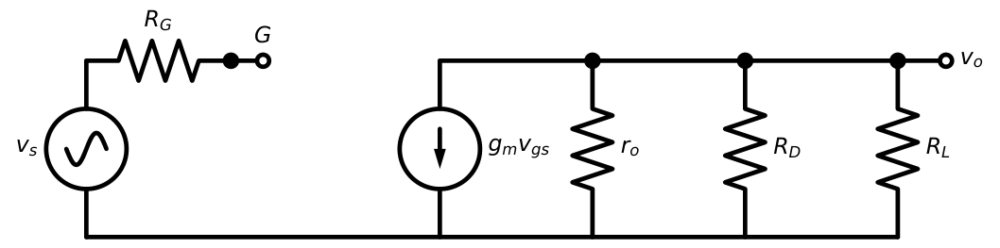
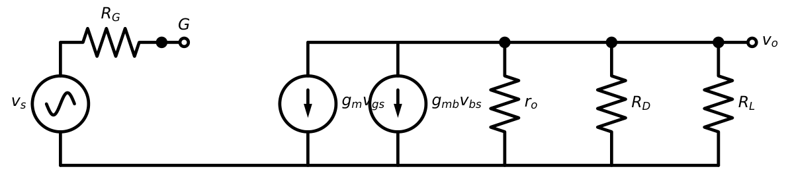
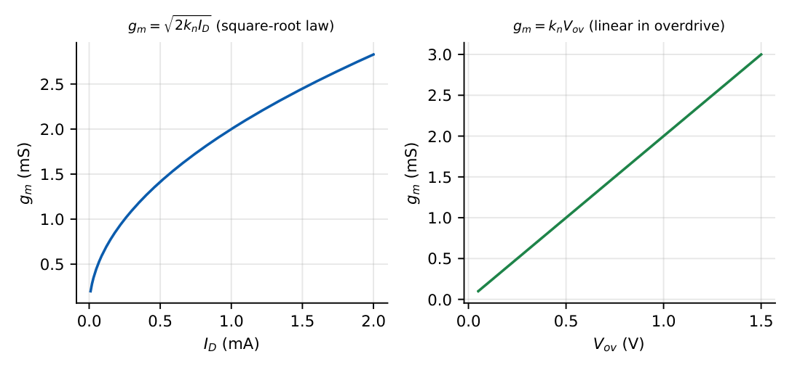
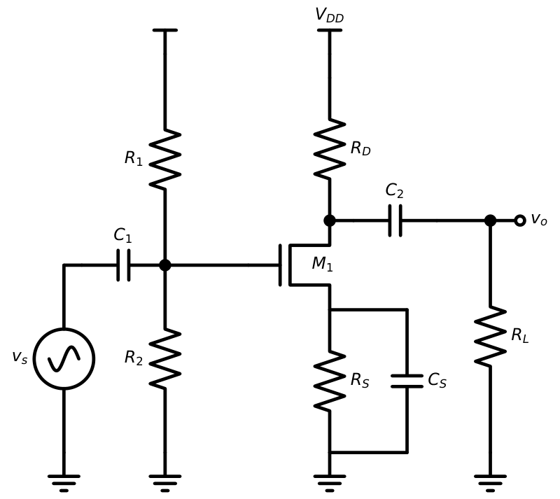
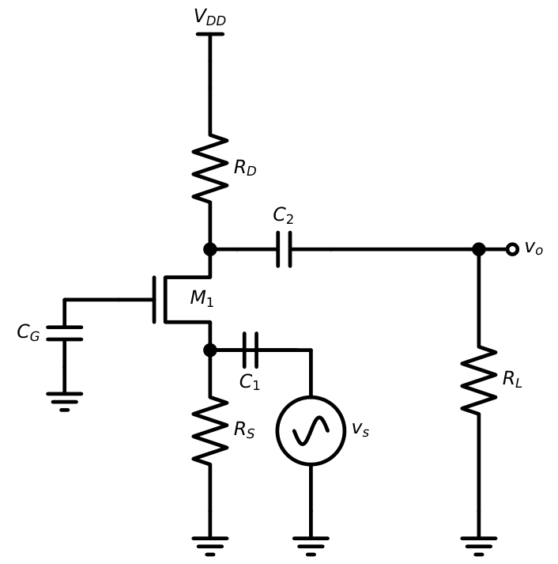
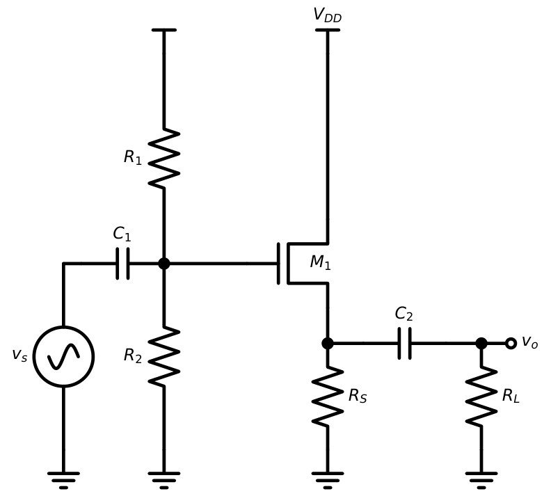
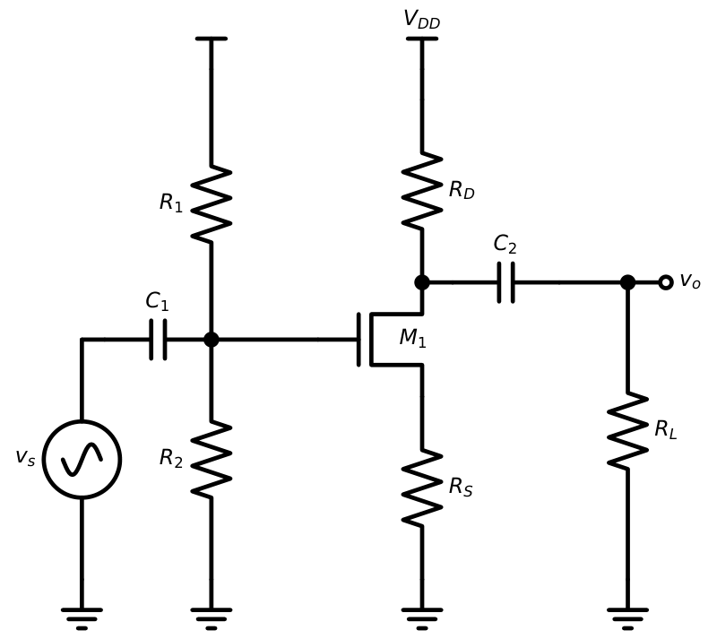
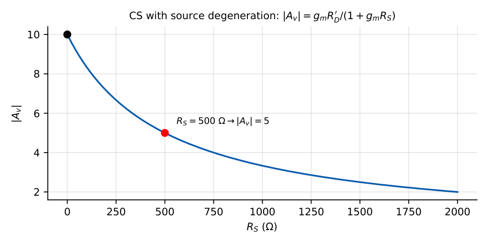

MOSFET Small-Signal Analysis
In this chapter
14.1 Small-signal MOS model
In saturation, \(i_D=\tfrac12k_n(V_{ov}+v_{gs})^2=I_D+k_nV_{ov}v_{gs}+\tfrac12k_nv_{gs}^2\). For \(v_{gs}\ll V_{ov}\) only the linear term matters: \(i_d=g_mv_{gs}\). The gate draws no current, so the input is an open circuit. Including channel-length modulation and the body effect:


14.2 Transconductance
\(g_m=\dfrac{\partial i_D}{\partial v_{GS}}=k_nV_{ov}=\sqrt{2k_nI_D}=\dfrac{2I_D}{V_{ov}}\) (\(k_n=\mu_nC_{ox}W/L\))

Contrast with the BJT: \(g_m^{BJT}=I_C/V_T\) is much larger for the same current, since \(V_T=26\) mV\(\ll V_{ov}/2\).
\(k_n=2\) mA/V\({}^2\), \(I_D=1\) mA: \(V_{ov}=\sqrt{2I_D/k_n}=1\) V, \(g_m=2\) mS. A BJT at \(1\) mA would give \(38.5\) mS, 19 times more.
14.3 Output resistance
\(r_o=\dfrac{1}{\lambda I_D}=\dfrac{V_A}{I_D}\). Intrinsic gain \(g_mr_o=\dfrac{2V_A}{V_{ov}}\), larger for longer channels and lower overdrive.
14.4 Body-effect transconductance
When the body is at a fixed AC potential and the source moves, \(v_{bs}\ne0\) and the body acts as a second (back) gate: \(i_d=g_mv_{gs}+g_{mb}v_{bs}\).
\(g_{mb}=\chi\,g_m,\qquad\chi=\dfrac{\gamma}{2\sqrt{2\phi_F+V_{SB}}}\approx0.1\text{--}0.3\)
\(\gamma=0.4\), \(2\phi_F=0.7\), \(V_{SB}=1\) V: \(\chi=0.4/(2\times1.304)=0.153\).
14.5 Common-source amplifier

With \(S\) at AC ground:
\(A_v=-g_m(R_D\|R_L\|r_o)\) \(R_{in}=R_1\|R_2\) (gate draws no current) \(R_{out}=R_D\|r_o\)
\(g_m=2\) mS, \(R_D=R_L=10\) k, \(r_o=50\) k (\(\lambda=0.02\), \(I_D=1\) mA). \(R_D\|R_L=5\) k; \(\|r_o=4.55\) k. \(A_v=-2\,\mathrm m\times4.55\,\mathrm k=-9.1\) (without \(r_o\): \(-10\)). \(R_{out}=10\|50=8.3\) k.
14.6 Common-gate amplifier

\(A_v=g_m(R_D\|R_L)\) (non-inverting) \(R_{in}=\dfrac{1}{g_m}\Big\|R_S\) \(R_{out}=R_D\) (with \(r_o\) large)
Current gain \(\approx1\). With body effect: \(R_{in}=1/(g_m+g_{mb})\).
\(g_m=2\) mS: \(R_{in}\approx500\ \Omega\); \(A_v=2\,\mathrm m\times5\,\mathrm k=+10\).
Common-gate has low input resistance, high output resistance and excellent bandwidth (no Miller effect), so it is used as the upper transistor of a cascode.
14.7 Source-follower amplifier

Let \(R_L'=R_S\|R_L\|r_o\).
\(A_v=\dfrac{g_mR_L'}{1+g_mR_L'}\) (without body effect) \(=\dfrac{g_mR_L'}{1+(g_m+g_{mb})R_L'}\) (with body effect)
\(R_{in}=R_1\|R_2\) \(R_{out}=\dfrac{1}{g_m+g_{mb}}\Big\|R_S\|r_o\)
\(g_m=2\) mS, \(R_S=R_L=10\) k: \(R_L'=5\) k, \(g_mR_L'=10\), \(A_v=10/11=0.909\). With \(\chi=0.2\): \(A_v=10/(1+12)=0.77\). \(R_{out}=(1/(2.4\,\mathrm{mS})=417\ \Omega)\|10\,\mathrm k=400\ \Omega\).
The body effect lowers the follower’s gain (a feedback effect): \(A_v<g_mR_L'/(1+g_mR_L')\). In CS with grounded source no such correction is needed.
14.8 Voltage gain
| CS | CG | CD (SF) | |
|---|---|---|---|
| \(A_v\) | \(-g_mR_D'\) | \(+g_mR_D'\) | \(\dfrac{g_mR_L'}{1+g_mR_L'}\) |
| Phase | \(180^\circ\) | \(0^\circ\) | \(0^\circ\) |
14.9 Input and output impedance
| CS | CG | CD | |
|---|---|---|---|
| \(R_{in}\) | \(\infty\) (or \(R_G\)) | \(1/g_m\) | \(\infty\) (or \(R_G\)) |
| \(R_{out}\) | \(R_D\|r_o\) | \(\approx R_D\) | \(\approx1/g_m\) |
14.10 Source degeneration

\(G_m=\dfrac{g_m}{1+g_mR_S}\) \(A_v=-\dfrac{g_m(R_D\|R_L)}{1+g_mR_S}\approx-\dfrac{R_D\|R_L}{R_S}\ (g_mR_S\gg1)\)
\(R_{out}\approx R_D\|[r_o(1+g_mR_S)]\), an increased output resistance.

\(g_m=2\) mS, \(R_D\|R_L=5\) k, \(R_S=500\ \Omega\): \(A_v=-10/(1+1)=-5\). The gain falls by \(2\times\), but is now stable against variations of \(g_m\) (\(\pm20\%\) in \(g_m\) gives only \(\pm10\%\) change in \(A_v\)).
14.11 GATE problems
Q1. An NMOS with \(\mu_nC_{ox}W/L=4\) mA/V\({}^2\) is biased at \(I_D=0.5\) mA. \(g_m\) (mS) is .
Q2. A CS amplifier has \(g_m=5\) mS, \(R_D=4\) k\(\Omega\), \(R_L=4\) k\(\Omega\), \(r_o=\infty\). \(A_v\) is .
Q3. A source follower has \(g_m=4\) mS, \(R_L'=1\) k\(\Omega\) (no body effect). \(A_v=\) .
Q4. The input resistance of a common-gate amplifier with \(g_m=2\) mS (\(R_S\to\infty\)) is (A) 500 \(\Omega\) (B) 2 k\(\Omega\) (C) \(\infty\) (D) 50 k\(\Omega\).
Q5. A CS stage has \(g_m=2\) mS, \(R_D=10\) k\(\Omega\) (\(R_L=\infty\)) and unbypassed \(R_S=1\) k\(\Omega\). \(|A_v|\) is .
Q6. Body effect in a source follower causes the voltage gain to (A) increase (B) decrease (C) unchanged (D) become negative.
Answers: Q1: \(\sqrt{2\times4\times0.5}=2\) mS. Q2: \(-5\,\mathrm m\times2\,\mathrm k=-10\). Q3: \(4/(1+4)=0.8\). Q4: (A). Q5: \(20/(1+2)=6.67\). Q6: (B).
- Compute \(g_m\) for \(I_D=0.2\) mA, \(V_{ov}=0.2\) V. [2 mS]
- Find \(r_o\) for \(\lambda=0.04\) at \(I_D=0.25\) mA. [100 k\(\Omega\)]
- Find the output resistance of a source follower with \(g_m=10\) mS, \(\chi=0.2\). [83 \(\Omega\)]
- CS stage \(A_v=-12\) with bypassed \(R_S\); unbypassed \(R_S=(2/g_m)\): new gain? [\(-4\)]